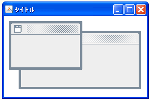

- Home ›
- Swing ›
- JDesktopPaneクラス
インターナルフレームの位置とサイズを設定する
JInternalFrameクラスのオブジェクトを作成した時点ではインターナルフレームはサイズが0となっています。その為、適切なサイズを設定する必要があります。インターナルフレームのサイズを設定するにはJInternalFrameクラスの親クラスであるComponentクラスで用意されている「setSize」メソッドを使います。
setSize
public void setSize(int width,
int height)
このコンポーネントのサイズを width および height に変更します。 パラメータ: width - このコンポーネントの新しい幅 (ピクセル単位) height - このコンポーネントの新しい高さ (ピクセル単位)
1番目の引数にインターナルフレームの幅を、2番目の引数にインターナルフレームの高さを表すint型の値を指定します。単位はピクセルです。
実際の使い方は次のようになります。
JDesktopPane desktop = new JDesktopPane(); JInternalFrame iframe = new JInternalFrame(); iframe.setSize(150, 100);
インターナルフレームの位置を指定する
インターナルフレームをデスクトップペインの中のどの位置に配置するのかを指定します。デスクトップペインの左上座標を原点として右方向にx軸、下方向にy軸を取った場合の座標を指定します。配置位置を設定するにはJInternalFrameクラスの親クラスであるComponentクラスで用意されている「setLocation」メソッドを使います。
setLocation
public void setLocation(int x,
int y)
このコンポーネントを新しい位置に移動します。新しい位置の左上隅は、この コンポーネントの親の座標空間の x パラメータおよび y パラメータによって 指定されます。 パラメータ: x - 親の座標空間での新しい位置の左上隅の x 座標 y - 親の座標空間での新しい位置の左上隅の y 座標
1番目の引数にインターナルフレームのx座標を、2番目の引数にインターナルフレームのy座標を表すint型の値を指定します。単位はピクセルです。
実際の使い方は次のようになります。
JDesktopPane desktop = new JDesktopPane(); JInternalFrame iframe = new JInternalFrame(); iframe.setSize(150, 100); iframe.setLocation(10, 10);
インターナルフレームのサイズと位置をまとめて指定する
インターナルフレームのサイズと位置をまとめて指定する方法を確認します。JInternalFrameクラスの親クラスであるComponentクラスで用意されている「setBounds」メソッドを使います。
setBounds
public void setBounds(int x,
int y,
int width,
int height)
このコンポーネントを移動し、サイズ変更します。左上隅の新しい位置は x お よび y によって指定され、新しいサイズは width および height によって指 定されます。 パラメータ: x - このコンポーネントの新しい x 座標 y - このコンポーネントの新しい y 座標 width - このコンポーネントの新しい width height - このコンポーネントの新しい height
1番目の引数にインターナルフレームのx座標を、2番目の引数にインターナルフレームのy座標を表すint型の値を指定します。3番目の引数にインターナルフレームの幅を、4番目の引数にインターナルフレームの高さを表すint型の値を指定します。単位はピクセルです。
実際の使い方は次のようになります。
JDesktopPane desktop = new JDesktopPane(); JInternalFrame iframe = new JInternalFrame(); iframe.setBounds(10, 10, 150, 100);
setSizeとsetLocationを使って別々に指定しても構いませんし、setBoundsを使ってまとめて指定してもどちらでも構いません。
サンプルプログラム
では簡単なサンプルを作成して試してみます。
import javax.swing.*;
import java.awt.BorderLayout;
public class JDesktopPaneTest4 extends JFrame{
public static void main(String[] args){
JDesktopPaneTest4 frame = new JDesktopPaneTest4();
frame.setDefaultCloseOperation(JFrame.EXIT_ON_CLOSE);
frame.setBounds(10, 10, 300, 200);
frame.setTitle("タイトル");
frame.setVisible(true);
}
JDesktopPaneTest4(){
JDesktopPane desktop = new JDesktopPane();
JInternalFrame iframe1 = new JInternalFrame();
iframe1.setBounds(10, 10, 150, 100);
iframe1.setVisible(true);
JInternalFrame iframe2 = new JInternalFrame();
iframe2.setSize(250, 120);
iframe2.setLocation(30, 30);
iframe2.setVisible(true);
desktop.add(iframe1);
desktop.add(iframe2);
getContentPane().add(desktop, BorderLayout.CENTER);
}
}
上記をコンパイルした後で実行すると次のように表示されます。

( Written by Tatsuo Ikura )

著者 / TATSUO IKURA
初心者～中級者の方を対象としたプログラミング方法や開発環境の構築の解説を行うサイトの運営を行っています。